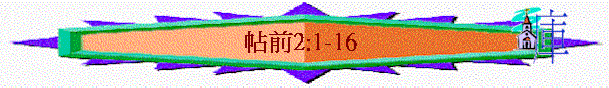

|
信仰的堅立與勉勵 |
|
|
信仰的堅定 |
生活的勉勵 |
|
1-3 |
4-5 |
一.信仰的堅定(1:2-3:13)
1.回想過往的經歷(1:2-2:16)
A.神僕的肯定(1:2-7)
B.各處的明證(1:8-10)
C.信徒的認知(2:1-16)
「弟兄們，你們自己原曉得我們進到你們那�堥瓣ㄛO徒然的。 」2:1
「因為我們從來沒有用過諂媚的話，這是你們知道的；也沒有藏著貪心，這是 神可以作見證的」2:5
「我們向你們信主的人，是何等聖潔、公義、無可指摘，有你們作見證，也有 神作見證。 」2:10
〜本段很多「 曉得」「 知道」「 作見證」的字眼，信徒能肯定他們過往所相信的信仰，是因為他們自己也記得及知道過往所領受的是何等真實，也是從神而來，保羅引領他們自己回想自己過往肯定的信仰來堅固他們
〜而2:1提及的「 不是徒然的」有不是「 空的」、「虛空 」、「徒勞的 」意思，信徒知道保羅過往在他們那�堜狶@的工作及所傳的道不是徒勞的，他們想回以前的被建立及神僕在他們那裡真實有效的工作，可令他們對所信更堅固，而神僕們所作所講不徒然及不是虛浮的原因如下(信徒也是認知的)：
a.從傳揚過程而看：是超越環境的
「我們從前在腓立比被害受辱，這是你們知道的；然而還是靠我們的 神放開膽量，在大爭戰中把 神的福音傳給你們。 」2:2
「從那�堥茖黖怚艉鞢A就是馬其頓這一方的頭一個城，也是羅馬的駐防城。我們在這城�埵矰F幾天。 」徒16:12
「眾人就一同起來攻擊他們。官長吩咐剝了他們的衣裳，用棍打； 打了許多棍，便將他們下在監�堙A囑咐禁卒嚴緊看守。 禁卒領了這樣的命，就把他們下在內監�堙A兩腳上了木狗。 約在半夜，保羅和西拉禱告，唱詩讚美 神，眾囚犯也側耳而聽。」徒16:22-25
「二人出了監，往呂底亞家�堨h，見了弟兄們，勸慰他們一番，就走了。保羅和西拉經過暗妃坡里、亞波羅尼亞，來到帖撒羅尼迦，在那�埵陬S太人的會堂。保羅照他素常的規矩進去，一連三個安息日，本著聖經與他們辯論，」徒16:40-17:2
(1)他們曉得神僕曾在腓立比受逼害
〜保羅、西拉曾在腓立比傳道，但後受害，被人用棍打及收監裡，這些事是教會知道的
(2)他們知道神僕出監後仍放膽傳道
〜一個帶有假信仰的傳講者，若受到難處，可能會喪膽放棄作工，但神僕卻沒有此表現，他們在大爭戰逼迫中，仍繼續傳揚真道，有勇氣的將福音傳至教會，也證明他們不是虛假的傳講者
b.從傳講內容而看：是出於真誠的
「我們的勸勉不是出於錯誤，不是出於污穢，也不是用詭詐。 但 神既然驗中了我們，把福音託付我們，我們就照樣講，不是要討人喜歡，乃是要討那察驗我們心的 神喜歡。因為我們從來沒有用過諂媚的話，這是你們知道的；也沒有藏著貪心，這是 神可以作見證的。」2:3-5
(1)真誠的傳道
(A)其內容—不是出於錯誤
〜他們所傳是真實的，不是謬誤道理
(B)其動機—不是出於污穢
〜他們沒存敗德、污穢的動機存講神話
(C)其方法—不是用詭詐
∼在馬其頓和亞該亞一帶地方所謂的「哲人」或「聖者」，他們遊走四方，到處開課教訓人，往往賣弄詞令，沽名釣譽。[1]
∼「驗中了」原文所用動詞是現在式分詞(完成式)，有繼續不斷的意思；神驗中他們成為神的用人，是持續的，他們真是神的僕人，不是沽名釣譽的，其內容、動機、方法也是真誠的。
(2)真誠的原因
(A)其來源—是源自神的，他們照樣的講
(B)其動機—是神的揀選與託付，他們是為完成神託付而講，動機不是要討人喜悅，乃是討神喜悅
(C)其方法—沒用諂媚的話(不是用巴結、奉承別人的話)
(3)真誠的明證
(A)神可作見證
(B)人是知道的
c.從講者生命而看：是令人佩服的
(1)無私的愛心
(A)不是為己的作工
「我們作基督的使徒，雖然可以叫人尊重，卻沒有向你們或向別人求榮耀； 」2:6
〜保羅來到他們那�堙A他有權叫人尊重他，有權求人的榮耀，但他們沒有為己得益的心來到信徒中間
(B)常存捨命的愛心
「只在你們中間存心溫柔，如同母親乳養自己的孩子。我們既是這樣愛你們，不但願意將 神的福音給你們，連自己的性命也願意給你們，因你們是我們所疼愛的。」2:7-8
〜在地上母親如何用溫柔、用無私的愛乳養（有親切照顧的含意）自己孩子，神僕們也一樣用這份連自己性命也願意付出的愛愛他們，不單願意將福音傳給他們，也願為他們捨己
(2)殷勤的作工
「弟兄們，你們記念我們的辛苦勞碌，晝夜做工，傳 神的福音給你們，免得叫你們一人受累。 」2:9
「也未嘗白吃人的飯，倒是辛苦勞碌，晝夜做工，免得叫你們一人受累。」帖後3:8
「他們本是製造帳棚為業。保羅因與他們同業，就和他們同住做工。」徒18:3
〜神僕如何顯出他們對羊的愛，就是他們殷勤作工，一方面努力傳道，另一方面，雙手親自作工，不在他們中間白吃人的飯，免得他們受累。
∼當時所有猶太人男子都必須從小學習一種謀生的技能，連拉比也不能例外，他們不能單靠教授律法來維持生活。保羅大概自幼就學會製造帳棚，故以此供養自己。[2]
(3)
無責的生命
「我們向你們信主的人，是何等聖潔、公義、無可指摘，有你們作見證，也有 神作見證。」2:10
〜神僕在他們中間的為人，是何等聖潔、公義、無可指摘的，也證明他們真是從神而來有生命的僕人，從傳講者的為人也証實他們所作及所講的是真實可靠的。
(4)
不息的勸導
「你們也曉得，我們怎樣勸勉你們，安慰你們，囑咐你們各人，好像父親待自己的兒女一樣，要叫你們行事對得起那召你們進他國、得他榮耀的 神。」2:11-12
〜神僕也像父親，用諸般的方法----勸勉(呼籲及鼓勵)、安慰、囑咐(作證、向信徒證明一些事)，為要他們行事為人對得起召他們的神，而「召」字原文現在時式，表示神對信徒的恩召是仍然持續的，他們仍是神所召的人，人生也要向神負責的。
d.從自己領受而看：實是神的道的
「為此，我們也不住地感謝 神，因你們聽見我們所傳 神的道就領受了；不以為是人的道，乃以為是 神的道。這道實在是 神的，並且運行在你們信主的人心中。 」2:13
「他們中間有些人聽了勸，就附從保羅和西拉，並有許多虔敬的希臘人，尊貴的婦女也不少。 」徒17:4
〜從神僕的生命及所講的內容，再加上信徒自己領受的經歷，他們真知道自己所得著的不是人的道，乃是神的道！
〜人的言語可能會包含錯誤、虛浮、私心的元素，但神的道卻沒有這些，是真實有果效的
〜信徒也經歷神的道在人的心內中工作
〜保羅也為此感謝神，一個真正神的僕人，他們真正的喜悅不是人對自己的肯定，乃是人從神僕中更肯是神的話語及神的工作，這才是傳道者真正的喜悅
e.從帶來結果而看：是有生命力的
「弟兄們，你們曾效法猶太中在基督耶穌�堙@神的各教會；因為你們也受了本地人的苦害，像他們受了猶太人的苦害一樣。 這猶太人殺了主耶穌和先知，又把我們趕出去。他們不得 神的喜悅，且與眾人為敵，不許我們傳道給外邦人使外邦人得救，常常充滿自己的罪惡。 神的忿怒臨在他們身上已經到了極處。」帖前2:14-16
「但那不信的猶太人心�媔�妒，招聚了些市井匪類，搭夥成群，聳動合城的人闖進耶孫的家，要將保羅、西拉帶到百姓那�堙C找不著他們，就把耶孫和幾個弟兄拉到地方官那�堙A喊叫說：「那攪亂天下的也到這�堥茪F，耶孫收留他們。這些人都違背凱撒的命令，說另有一個王耶穌。」眾人和地方官聽見這話，就驚慌了；於是取了耶孫和其餘之人的保狀，就釋放了他們。」徒17:5-9
「他既按著 神的定旨先見被交與人，你們就藉著無法之人的手，把他釘在十字架上，殺了。」徒2:23
(1)受本地人的苦害
〜如何証明他們所領受的是神的道？從神的道在他們心中工作，在外表的行為可顯露出來，而「運行」原文現在時式表示神的話正在不斷地運行中。
〜他們昔日信主後，曾受本地人的苦害，徒17章講述本地人想捉拿保羅與西拉，後來找不著他們，就逼迫當地信徒
〜他們在苦難中，仍堅持信仰，就証明神的道實在運行在他們中間
(2)其他教會也受苦害
〜在猶太中的教會也受苦害，猶太人曾釘主在十架中，也趕走逼害信徒
〜這些猶太人不得神喜悅，神的忿怒會至終臨到他們身上
〜他們的惡行如下：
(A)殺害耶穌和先知
(B)逼迫使徒及信徒
(C)敵擋真道(不容福音傳給外邦人)
(D)充滿自己的罪悪